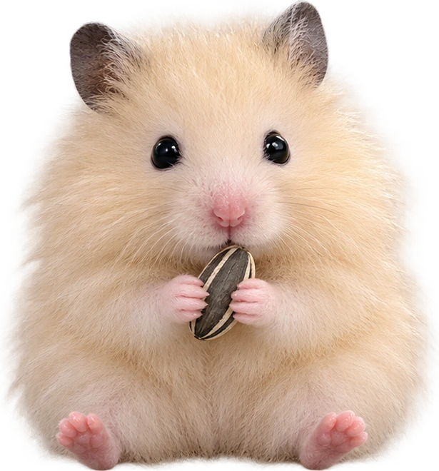
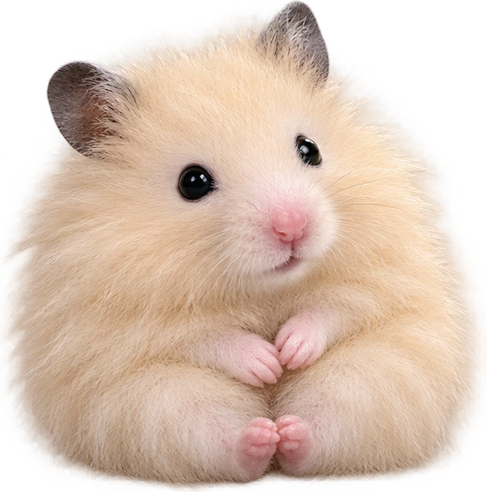
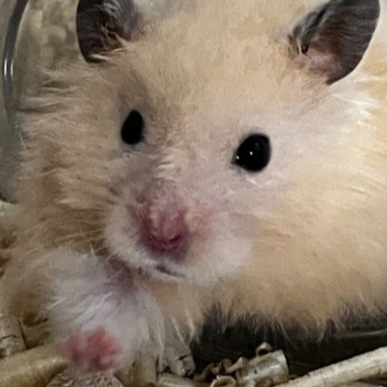

« Name: 보리 Bori
« Color: 포근한 크림색
« Charm: 까만 눈, 분홍 코
안녕! 저희집 보리를 소개합니다.
작은 발로 찾아온 커다란 행복.
( ˶ᵔ ᵕ ᵔ˶ )
복슬복슬한 털과 동그란 볼,
한 번 마주치면 자꾸 보고 싶은 얼굴.
이곳은 보리의 귀여운 순간들을
하나씩 모아 두는 작은 홈페이지입니다.

« 작은 귀
« 반짝이는 눈
« 말랑한 하루
보리의 하루는 어떤 모습일까?
사진첩에서 만나 봐!
₍ᐢ. ̫.ᐢ₎ ♡
밥 먹다가 빼꼼.
놀다가 또 빼꼼.
평범한 하루도 보리와 함께라면
조금 더 다정한 장면이 됩니다.
보리 보고 가는 길에
작은 인사 하나 남겨 주세요 ♡